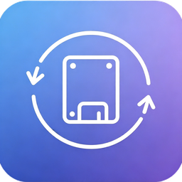

站点
连接加密
挂载到
—
防锁屏
未触发
列表里任意一个「已启用」的程序在运行，就保持屏幕常亮；全部退出后自动恢复，系统该睡就睡。
监控的程序
配置
—
运行日志

FtpMount
版本 — · 构建 —
把 FTP / FTPS 服务器挂载成 Windows 本地盘符，像用 U 盘一样用远程目录。
- 基于 WinFsp，资源管理器原生访问，无需安装驱动
- 连接池 + 惰性下载 + REST 区间续传，大目录不卡顿
- 死连接自动探活重连，断网恢复后无需重新挂载
- 托盘常驻、开机自启、密码用 DPAPI 加密保存